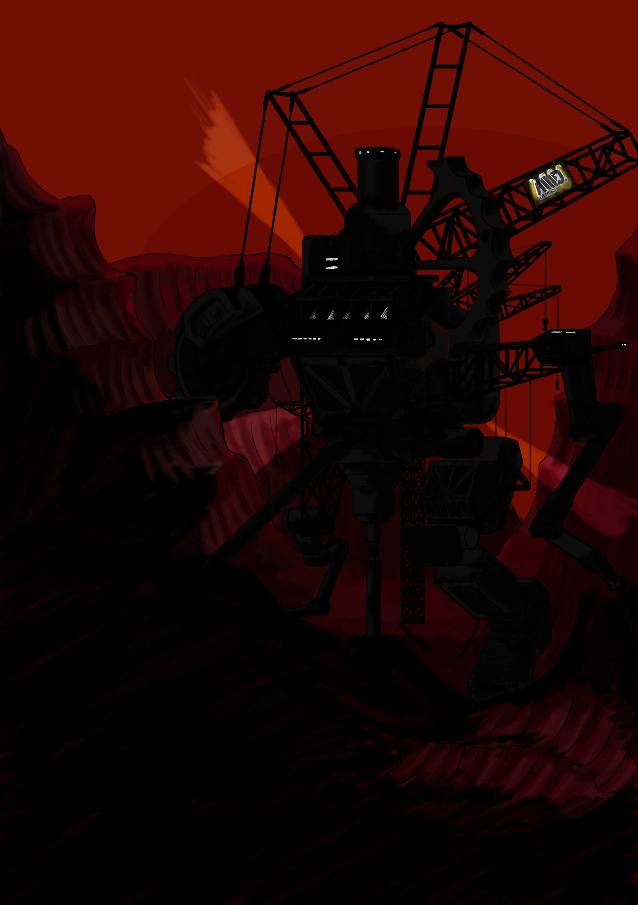
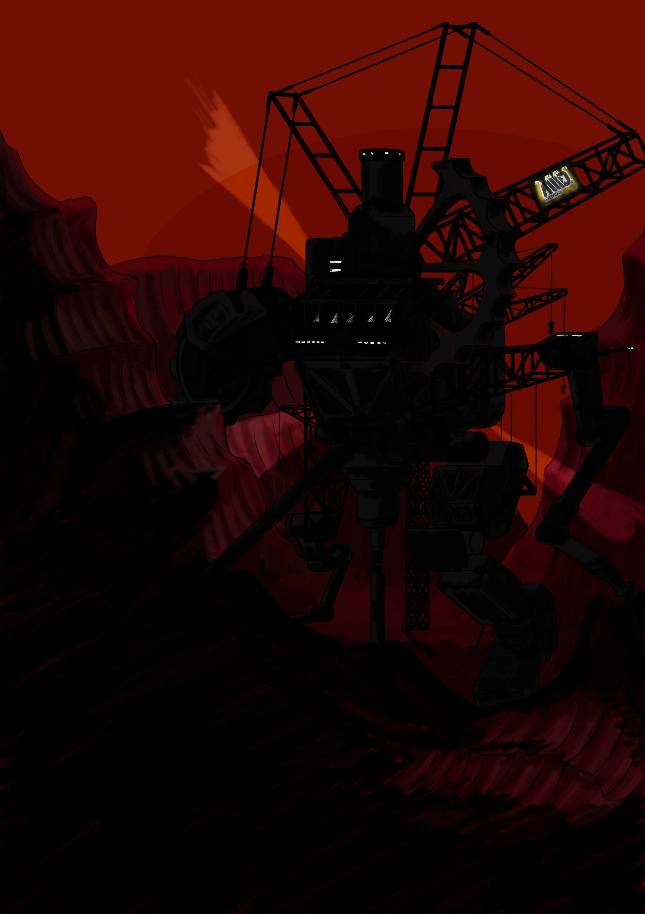

3D
Projecten die geheel of deels 3D-gemoddeled zijn.

Een 3d-model van Cat in een jaren '90 stijl.
Een 3D-model dat ik heb gemoddeled en gerigged, en vervolgens als modificatie in de skate-game "Bomb Rush Cyberfunk" heb geplaatst. Met oog voor het houden aan de visuele stijl van de game.
Gebruik van 3d-modellen kan het tekenen en animeren van rigide objecten of complexe scenes versimpelen.

 

Een onaf model van de grote machine rechts.